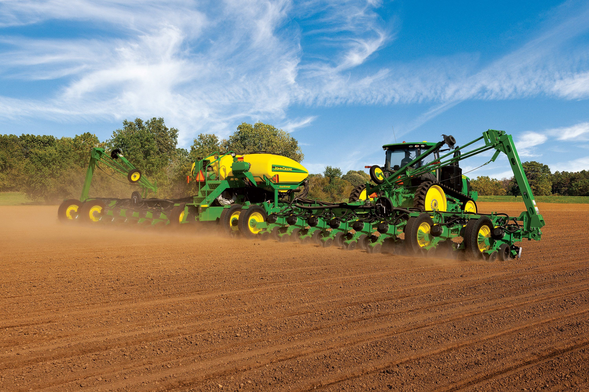

Wheat Crops {{cropsDetail.name}}
About the Wheat
Wheat is the main cereal crop in India.
The total area under the crop is about 29.8 million
hectares in the country. The production of wheat
in the country has increased significantly from
75.81 million MT in 2006-07 to an all time record
high of 94.88 million MT in 2011-12. The
productivity of wheat which was 2602 kg/hectare
in 2004-05 has increased to 3140 kg/hectare in
2011-12. The major increase in the productivity of
wheat has been observed in the states of
Haryana, Punjab and Uttar Pradesh. Higher area
coverage is reported from MP in recent years.
Indian wheat is largely a soft/medium hard, medium protein, white bread wheat,
somewhat similar to U.S. hard white wheat. Wheat grown in central and western India is
typically hard, with high protein and high gluten content. India also produces around 1.0 -1.2
million tons of durum wheat, mostly in the state of Madhya Pradesh. Most Indian durum is not
marketed separately due to segregation problems in the market yards. However, some
quantities are purchased by the private trade at a price premium, mainly for processing of
higher value/branded products.
The production and productivity of Wheat crop were quite low, when India became
independent in 1947. The production of Wheat was only 6.46 million tonnes and prod uctivity
was merely 663 kg per hectare during 1950 -51, which was not sufficient to feed the Indian
population. The Country used to import Wheat in large quantities for fulfilling the needs of our
people from many countries like USA under PL-480. The reasons of low production and
productivity of Wheat at that time was
(a) the tall growing plant habit resulting in lodging, when grown under fertile soils,
(b) the poor tillering and low sink capacity of the varieties used,
(c) higher susceptibility to diseases,
(d) the higher sensitivity to thermo & photo variations, etc., resulting in
pooradaptability, and
(e) longer crop duration resulting in a long exposure of plants to the climatic variations
and insect pest / disease attacks.

The Government of India appointed a commission in 1961 to assess the feasibility of increasing the crop productivity under prevailing Indian ecological conditions. As result of various steps taken by Govt. of India, the Wheat scenario in our country has completely changed. In the post Independence era, country used to import Wheat for our needs but due to bumper increase in the production and productivity of Wheat in the 'Green Revolution' period in late sixties, our country became self dependent in Wheat production. At present, country is producing much more excess Wheat than the requirement and Godowns are over -flooded with Wheat.
Histroy of wheat
Archaeological analysis of wild emmer indicates that it was first cultivated in the southern
Levant,
with
finds dating back as far as 9600 BC. Genetic analysis of wild einkorn wheat suggests that it was
first grown in
the Karacadaǧ Mountains in southeastern Turkey. Dated archeological remains of einkorn wheat in
settlement
sites near this region, including those at Abu Hureyra in Syria, suggest the domestication of
einkorn near the
Karacadaǧ Mountains. With the anomalous exception of two grains from Iraq ed-Dubb, the earliest
carbon14 date for
einkorn wheat remains at Abu Hureyra is 7800 to 7500 years BC.
Remains of harvested emmer from several sites near the Karacadag Range have been dated to
between 8600 (at Cayonu) and 8400 BC (Abu Hureyra), that is, in the Neolithic period. With the
exception of Iraq
ed-Dubb, the earliest carbon-14 dated remains of domesticated emmer wheat were found in the
earliest
levels
of Tell Aswad, in the Damascus basin, near Mount Hermon in Syria. These remains were dated by
Willem
van
Zeist and his assistant Johanna Bakker-Heeres to 8800 BC. They also concluded that the settlers
of
Tell Aswad
did not develop this form of emmer themselves, but brought the domesticated grains with them
from an
as yet
unidentified location elsewhere.
The cultivation of emmer reached Greece, Cyprus and Indian subcontinent by 6500 BC, Egypt
shortly
after 6000 BC, and Germany and Spain by 5000 BC. "The early Egyptians were developers of bread
and
the use
of the oven and developed baking into one of the first large-scale food production industries."
By
4000 BC, wheat
had reached the British Isles and Scandinavia. Wheat likely appeared in China's lower Yellow
River
around 2600
Before Common Era (BC).
The oldest evidence for hexaploid wheat has been confirmed through DNA analysis of wheat seeds,
dating to around 6400–6200 BC, recovered from Çatalhöyük. The first identifiable bread wheat
(Triticum
aestivum) with sufficient gluten for yeasted breads has been identified using DNA analysis in
samples from a
granary dating to approximately 1350 BC at Assiros in Macedonia.
From Asia, wheat continued to spread across Europe and to the Americas in the Columbian
exchange.
In the British Isles, wheat straw (thatch) was used for roofing in the Bronze Age, and was in
common
use until
the late 19th century.
White wheat bread was historically a high status food, but during the nineteenth century it
became
in
Britain an item of mass consumption, displacing oats, barley and rye from diets in the North of
the
country. It
became "a sign of a high degree of culture". After 1860, the enormous expansion of wheat
production
in the
United States flooded the world market, lowering prices by 40%, and (along with the expansion of
potato
growing) made a major contribution to the nutritional welfare of the poor.
Climate Requirement
Wheat crop has wide adaptability. It can be grown not only in the tropical and sub -
tropical zones, but also in the temperate zone and the cold tracts of the far north ,beyond even
the 60 degree north altitude . Wheat can tolerate severe cold and snow and resume growth
with the setting in of warm weather in spring .It can be cultivated from sea level to as high as
3300 meters.
The best wheat are produced in areas favoured with cool, moist weather during the
major portion of the growing period followed by dry , warm weather to enable the grain to ripen
properly. The optimum temperature range for ideal germination of wheat seed is 20 -25 C
though the seeds can germinate in the temperature range 3.5 to 35 c. Rains just after sowing
hamper germination and encourage seedling blight. Areas with a warm and damp climate are
not suited for wheat growing.
During the heading and flowering stages, excessively high or low temperatures and
drought are harmful to wheat. Cloudy weather, with high humidity and low temperatures i s
conducive for rust attack. Wheat plant requires about 14 -15 c optimum average temperature at
the time of ripening . The temperature conditions at the time of grain filling and development
are very crucial for yield. Temperatures above 250c during this pe riod tend to depress grain
weight. When temperatures are high, too much energy I lost through the process of
transpiration by the plants and the reduced residual energy results in poorer grain formation
and lower yields. Wheat is mainly a rabi (winter) sea son crop in India.
Soil Information
Wheat is grown in a variety of soils of India. Soils with a clay loam or loam texture, good structure and moderate water holding capacity are ideal for wheat cultivation. Care should be taken to avoid very porous and excessively dr ained oils. Soil should be neutral in its reaction. Heavy soil with good drainage are suitable for wheat cultivation under dry conditions. These soils absorb and retain rain water well. Heavy soils with poor structure and poor drainage are not suitable as wheat is sensitive to water logging. Wheat can be successfully grown on lighter soils provided their water and nutrient holding capacity are improved
Fertilizer Management
The time and placement of fertilizer is another area where significant progress w as made. It was demonstrated that 120 kg nitrogen, 60 kg phosphorus and 30 kg potash per hectare were required for optimum productivity. The N was to be applied in two split doses of 60 kg as basal and the remaining 60 kg at first irrigation and full phosp horus and potash to be applied as basal. Recently, the new wheat varieties have responded up to 180 kg N/ha with optima dose around 150 kg/ha. In the Indo-Gangetic plains, application of zinc 25kg/ha in rice - wheat system was found to increase the yield sub stantially. Recently, the use of sulphur has been found beneficial for enhancing the productivity as well as the grain protein content of wheat. Response to Mn (pockets in the Indo-Gangetic plains) and boron (eastern and far eastern region) has also been realized
Nutrient Management

With intensive agriculture, deficiency of essential nutrients
has also become wide spread. The work conducted under the All
India Coordinated Research Project on Micronutrient in Crops and
Soils, has shown wide spread deficiency of zinc in soils in India. At
the national level, the deficiency level in micro nutrients is Zn: 46
%, B: 17 %, Mo: 12 %, Fe: 11 % and Cu: 5%. The deficiency of
sulphur has also been reported across a wide range of soils
(38%).The yield response to sulphur has been obtained in more than
40 crops including cereal, millets, oilseeds and pulses etc. To
realize the potential yield, strategies may include
• Site specific nutrient management for targeted yields
• Integration of crop residues, bio fertilizers etc with inorganic
fertilization
• Tillage techniques like FIRBS for increasing nutrient use efficiencies
• Remote sensing for efficient Nutrient management
• Nutrient management, straw quality vis-à-vis human and animal health
Commercial Use
Harvested wheat grain that enters trade is classified
according to grain properties for the purposes of
the commodity- and international trade markets. Wheat buyers
use these to decide which wheat to buy, as each class has
special uses, and producers use them to decide which classes
of wheat will be most profitable to cultivate.
Wheat is widely cultivated as a cash crop because it
produces a good yield per unit area, grows well in a temperate
climate even with a moderately short growing season, and
yields a versatile, high-quality flour that is widely used
in baking. Most breads are made with wheat flour, including
many breads named for the other grains they contain, for
example, most rye and oat breads. The popularity of foods made from wheat flour creates a large
demand for the
grain, even in economies with significant food surpluses.
In recent years, low international wheat prices have often encouraged farmers in the United
States
to
change to more profitable crops. In 1998, the price at harvest of a 60 pounds (27 kg) bushel was
$2.68 per.Some
information providers, following CBOT practice, quote the wheat market in per ton denomination.
A
USDA report
revealed that in 1998, average operating costs were $1.43 per bushel and total costs were $3.97
per
bushel. In
that study, farm wheat yields averaged 41.7 bushels per acre (2.2435 metric ton/hectare), and
typical total wheat
production value was $31,900 per farm, with total farm production value (including other crops)
of
$173,681 per
farm, plus $17,402 in government payments. There were significant profitability differences
between
low- and
high-cost farms, due to crop yield differences, location, and farm size.